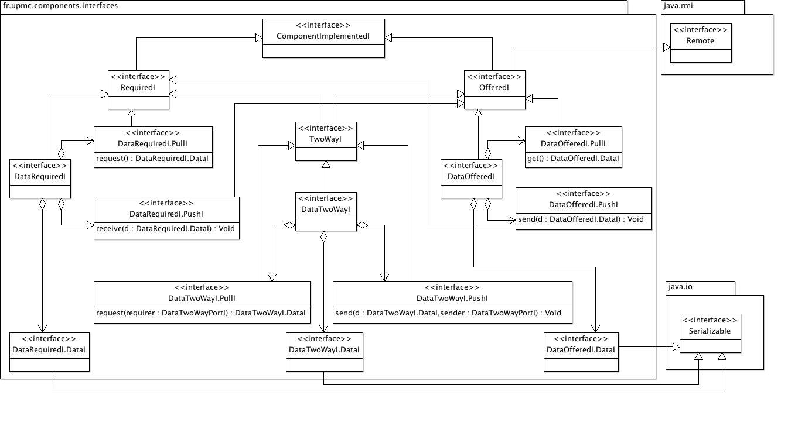

See: Description
| Interface | Description |
|---|---|
| ComponentImplementedI |
The interface
ComponentI serves as a common supertype for all
component interfaces in the component model. |
| DataOfferedI |
The interface
DataOfferedI defines a basic interface
for components that exchange raw data rather than calling each others
services. |
| DataOfferedI.DataI |
The interface
DataOfferedI.DataI provides for a generic
type of data produced by the offering component. |
| DataOfferedI.PullI |
The interface
DataOfferedI.PullI contains the signatures of
the methods that can be called by the requiring components to get data
from the offering component. |
| DataOfferedI.PushI |
The interface
DataOfferedI.PushI contains the signatures of
the methods that are called by the offering component to send data to
the requiring component. |
| DataRequiredI |
The interface
DataRequiredI defines a basic interface
for components that exchange raw data rather than calling each others
services. |
| DataRequiredI.DataI |
The interface
DataRequiredI.DataI provides for a generic
type of data expected by the requiring component. |
| DataRequiredI.PullI |
The interface
DataRequiredI.PullI contains the signatures
of the methods that can be called by the requiring components to get
data from the offering component. |
| DataRequiredI.PushI |
The interface
DataRequiredI.PushI contains the signatures
of the methods that are called by the offering component to send data to
the requiring component. |
| DataTwoWayI |
The interface
TwoWayDataI enables two components to exchange
data in a peer-to-peer way, that is the two components implement the same
interface and have both the sender and receiver roles. |
| DataTwoWayI.DataI |
The interface
TwoWayDataI.DataI is a marker for data that
can be exchanged between components using a two-way data interface. |
| DataTwoWayI.PullI |
The interface
TwoWayDataI.PullI contains the signature of
the method that is called by one component to get data from the other
component. |
| DataTwoWayI.PushI |
The interface
TwoWayDataI.PushI contains the signature of
the method that is called by one component to send data to the other
component. |
| OfferedI |
The interface
OfferedI represents the most general offered
interface for a component in this component model. |
| RequiredI |
The interface
RequiredI represents the most general required
interface for a component in this component model. |
| TwoWayI |
The interface
TwoWayI is meant to represent symmetric interfaces
connecting two components that can play both the role of clients and server
towards each others. |
Types of offered and required interfaces for components.
The package fr.upmc.components.interfaces contains all of the
kind of interfaces a component can use and implement. The interface
ComponentI serves as a common supertype for all interfaces
in the component model. A component interface is associated with a port
on a component, through which the component will be connected to
another component using a connector. Two major kinds of interface
are then introduced:
OfferedI is an interface implemented by a component acting as
a service provider. An offered interface therefor declares the signature
of services (methods) provided by the component.RequiredI is an interface that is required by a component,
expressing the services that the component will require during its
execution.When connecting components, a required interface of one component will be matched with the offered interface of another component in order to connect them, either as subcomponents of a composite components or inside an assembly of components. Offered interfazces can lead to several connections to several client compoents, but required interfaces are connected
Data exchange interfaces
Many components just exchange data, and not services per se. To cater for asynchronous exchange of data, two variant interfaces are defined:
DataOfferedI is an interface implemented by a component that
will produce data.DataRequiredI is an interface implemented by a component that
will consume data.
Both DataOfferedI and DataRequiredI declares a
DataI internal interface that serves as a supertype for objects
implementing the data that is exchanged between a producer and a consumer.
The classes defining data objects need not be implementing both the
DataOfferedI.DataI and DataRequiredI.DataI.
Indeed, though it is the most simple way to make the object directly
interpretable on both sides, data connectors propose an alternative way
to mediate between producer and consumer of data by requiring the implementation
of conversion to and from that allows to converts
required side data objects to offered side ones, and required side
objects from offered side ones.
Data exchange interfaces can be used in two modes: pull and push. In pull
mode, the consumer components calls the producer whenever it needs another
piece of data. In push mode, the producer calls to consumer each time it
has a new piece of data that can be consumed. These two modes are taken
into account by two internal interfaces PullI and
PushI defined in both DataOfferedI and
DataRequiredI interfaces. The pull mode is implemented
by the pair of methods defined in the PullI interfaces:
get() method in the DataOfferedI.PullI
interface, that is called upon the producer to get the next piece of
data.request() method in the DataRequiredI.PullI
interface, that is called upon the producer to request the next piece of
data.
Similarly, the push mode is implemented by the pair of methods defined in the
PushI interfaces:
send(DataI) method in the DataOfferedI.PushI
interface, that is called by the producer to send the next piece of
data.receive(DataI) method in the
DataRequiredI.PushI interface, that is called upon the consumer
to pass it the next piece of data.Two way interfaces
A third kind of interface is added: TwoWayI that is used when
two components play symmetrically the role of requirer and offerer of services
to each other, for example in peer-to-peer algorithms. Indeed, it is much
simpler in this case to consider that the two components as implementing a
unique interface rather that trying to connect them through two pairs of
required and offered interfaces. It also simplifies the connector that will
bind the two. As in offered and required interfaces, a data exchange variant
of the two interfaces is defined: DataTwoWayI. In two-way data
exchange, there is no need to distinguish a push and a pull mode, as both
components may take the initiative os sending a piece of data to the other
component. Exchanges are thus using only one pair of methods:
send(DataI, DataTwoWayPortI) method that is called by the
sender to send the next piece of data.receive(DataI, DataTwoWayPortI) method that is called upon
the receiver to pass it the next piece of data.These two methods take as parameter the port of the sender to enable the connector to forward the piece of data in the right direction. Indeed, as both components can act as sender and receiver, this parameter identifies the sender (and therefore the receiver) in the current exchange.
Using the package
When programming components, interfaces of the components must be defined to expose the services offered by the components and to make explicit the services required by the component. For each interface, the programmer must select the appropriate type of interfaces that is needed and make the corresponding interface defined in this package the super interface of its interface.
Here is a UML class diagram of the package:
